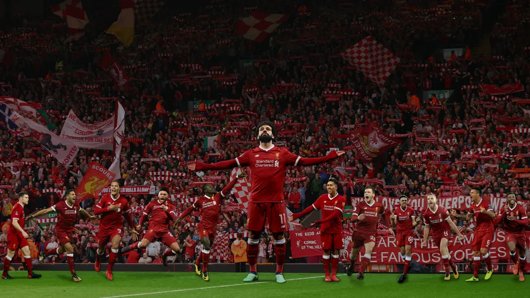

Anfield is a football stadium in Anfield, Liverpool, England, which has been the home of Liverpool F.C. since their formation in 1892. The stadium has a seating capacity of 61,276, making it the fifth largest stadium in England.[2] It was originally the home of Everton F.C. from 1884 to 1891, before they moved to Goodison Park after a dispute with the club president.[4]
Mohamed Salah passed the 250-appearance and 150-goal marks – and entered the top 10 of the club's all-time leading scorers list – during a 2021-22 season in which he lifted the FA Cup and Carabao Cup, and helped his team reach the third Champions League final of his Liverpool career and finish second in the Premier League.
